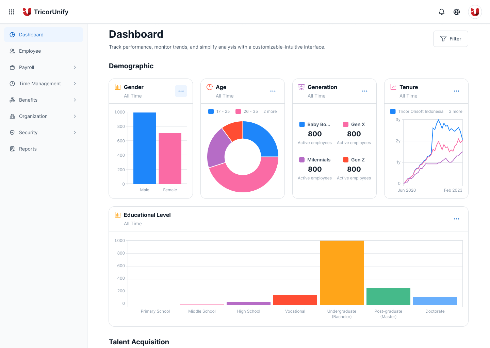
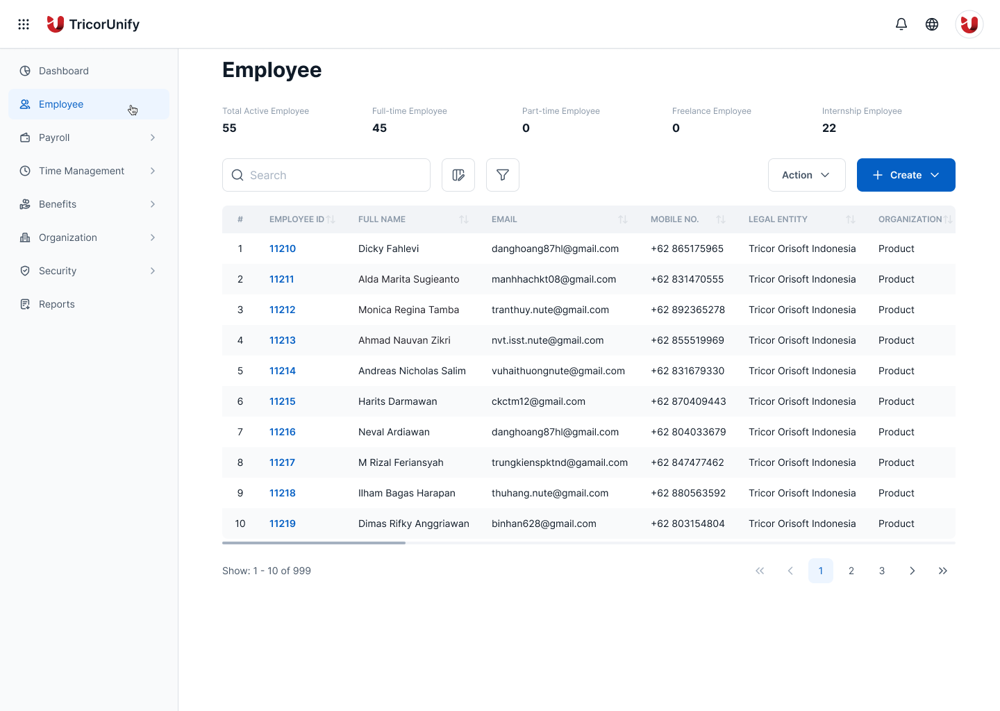
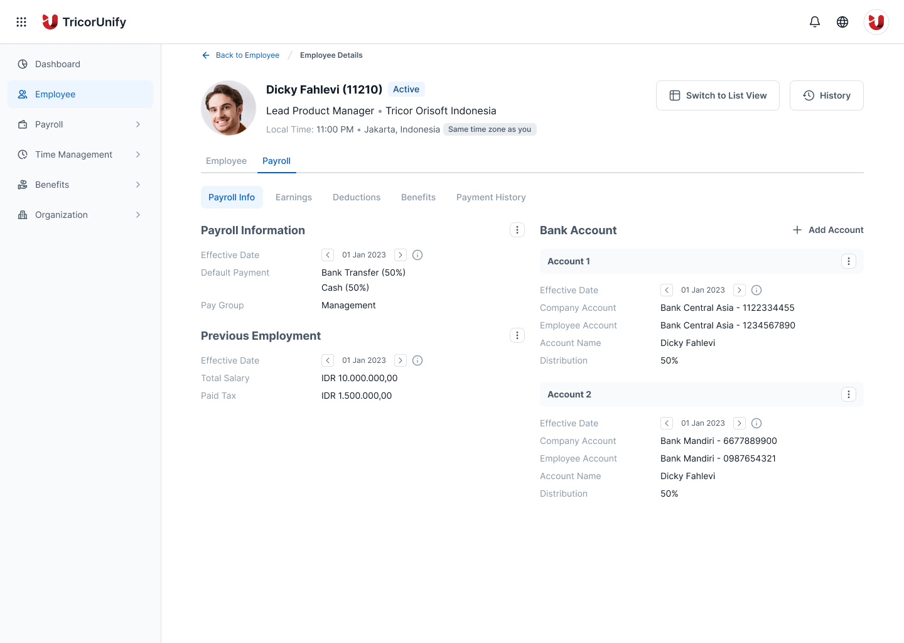
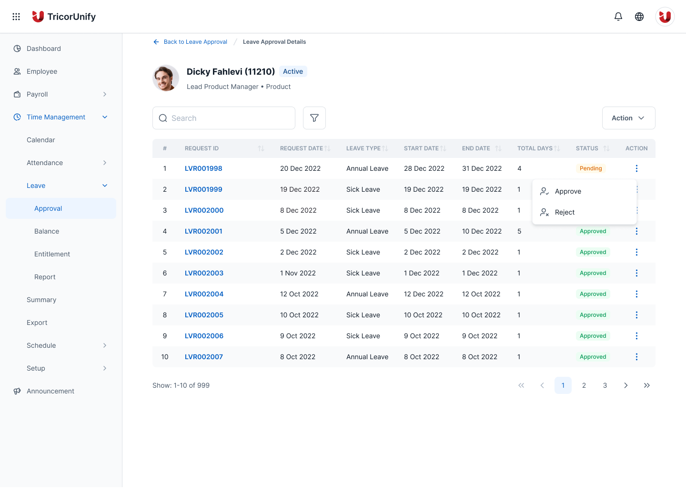

HRIS Dashboard
Platform HR untuk sisi company dan employee di kantor-kantor Tricor se-Asia, dibuat supaya payroll, absensi dan data karyawan tetap sinkron real-time, dari kantor pusat di Hong Kong ke setiap negara yang dilayani.
Visit tricorunify.com- Klien
- Sektor
- Peran
- Tim
- Periode
- Pasar
- Permukaan

Ringkasan
TricorUnify menjalankan HR Tricor Group untuk kantor-kantor se-Asia dari Hong Kong, real-time di setiap pasar. Saya mendesain shell yang dipakai bersama: satu dashboard, satu pola tabel, satu filter, supaya modul mana pun yang dibuka manajer atau karyawan berikutnya tetap terasa seperti produk yang sama.
Cakupan
- 01Wawancara stakeholder
- 02IA sisi company & employee
- 03Model data multi-negara
- 04Sistem tabel & filter
- 05User flow
- 06Wireframe
- 07Desain antarmuka
- 08Visualisasi data
- 09Design system
- 10Design QA
Masalah
Tiap negara membaca versi kebenaran yang berbeda.
TricorUnify menjalankan HR untuk kantor-kantor Tricor Group se-Asia dari kantor pusat di Hong Kong, jadi data karyawan, saldo cuti dan status payroll harus sama persis begitu berubah, tidak peduli tim HR negara mana atau karyawan mana yang membukanya berikutnya. Data yang baru sinkron semalam, bukan detik itu juga saat manajer menyetujui, berarti dua orang yang melihat profil yang sama bisa melihat dua kebenaran berbeda.
Produk ini juga sudah bertumbuh jadi dua audiens yang tidak berbagi bahasa desain: konsol admin untuk sisi Company, dan tampilan self-service untuk sisi Employee, masing-masing dirilis seolah yang lain tidak ada. Perubahan payroll yang dibuat admin di Hong Kong tidak punya gema yang terlihat di tab payroll karyawan sendiri, jadi kepercayaan pada angka itu bergantung pada telepon, bukan layar.
Pendekatan
Satu shell, dua sisi, real-time secara default.
Setiap modul (Dashboard, Employee, Payroll, Time Management, Benefits) kini membaca dari lapisan data yang sama secara live, bukan batch semalam, jadi satu approval, karyawan baru, atau perubahan payroll muncul di detik yang sama baik di konsol Company maupun tampilan self-service Employee, di negara mana pun itu terjadi.
Sisi Company dan Employee berbagi satu pola tabel, filter dan jenis chart, bukan dua bahasa desain, jadi admin HR di kantor pusat Hong Kong dan karyawan di kantor cabang membaca produk yang sama, bukan dua produk yang kebetulan berbagi satu layar login.
Layar




Hasil
Deliverable